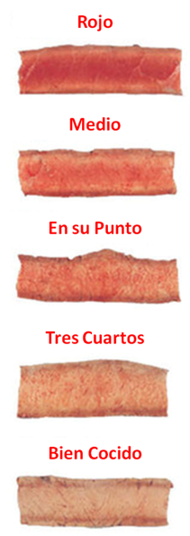

En esta sección encontrarás consejos y recomendaciones para que seas un experto en el Arte de Asar Carne:
1) PLANEACIÓN: Es necesario saber el número y tipo de personas que asistirán a tu parrillada, para poder calcular la cantidad de carne requerida para satisfacer a todos y evitar que sobre ó falte comida para tus invitados. Considera 250g para Mujeres, 350g para Hombres y 200g para Niños menores de 14 años.
2) COMPLEMENTOS: Tienes que considerar los complementos que vas a ofrecer a tus invitados, con el fin de crear una combinación balanceada y saludable. Nosotros recomendamos la siguiente lista de complementos:
Combustible: Carbón de Mezquite.
Arrancador de Flama: Ocote y Alcohol Sólido.
Sazonador: Sal Natural en Grano.
Bebidas: Agua Natural, Agua de Sabor, Refrescos, Jugos, Té Helado, Vinos Tintos de Mesa y/o Cerveza.
Botanas: Empanadas Estilo Argentino, Chistorra Española, Chorizo Argentino, Salchicha Estilo Alemana, Queso Provolone Natural ó Ahumado.
Verduras para Asar: Cebollitas Cambray, Nopales, Pimientos, Chiles, Papas, Etc...
Salsas: Picante de Habanero, Chile de Árbol y/o Chimichurri Estilo Argentino.
3) CORTES FINOS: Sólo en Denes
4) CONSEJOS PARA DESCONGELAR:
5) PROCESO DE ASADO: A continuación te damos unas recomendaciones para que tu Parrillada sea un Éxito:
Considerar por lo menos 30min para la preparación del carbón en el asador, desde que se enciende hasta que alcanza la temperatura óptima, para poder asar la carne sin quemarla.
Mantener los cortes a temperatura ambiente 20min antes, de esta manera usted ahorrará tiempo y combustible durante el asado.
Curar la parrilla, colocando en un trinche 1/4 de cebolla cruda untada con aceite, con el fin limpiarla y evitar que se pegue la carne. Considerar que la Parrilla debe de ir colocada por lo menos a 10cm de la Brasa.
Colocar el carbón en forma de “iglú” ó “pirámide” e insertar las varitas de ocote natural a manera de mecha. El ocote natural debe de encender y hará arder al carbón.
Marinar los cortes naturales, agregando Sal de Grano al gusto entre 10min y 20min antes de asarlos. De esta manera la Sal de Grano va a penetrar en los tejidos, ayudando a que la carne no se desjugue y conserve su sabor natural.
Esperar hasta que todo el Carbón arda y se vea al rojo vivo. Conforme se vaya agotando, se pueden ir añadiendo algunos pedazos medianos y a su vez se puede esparcir.
Colocar los cortes sobre la parrilla caliente por la brasa, espere para voltearlos en el momento que suelten su jugo. Aguarde el tiempo necesario para darle a su carne el término deseado y retírela del fuego. Entre menos maneje, mueva o presione la carne es mejor, ya que así retendrá más su jugo.
6) TÉRMINOS DE ASADO: Es indispensable que de acuerdo al tipo de carne y de su gusto, brinde a la carne el tiempo de asado necesario para satisfacer a sus invitados. El tiempo de asado varía con la temperatura y con el grosor de su corte. Se recomienda hacer pruebas previas, para poder definir la eficiencia de su asador.
Los términos de cocción en base a la temperatura de la carne son:

Rojo (55°C): También conocido como Inglés. Corte sellado por ambos lados a fuego alto. La capa externa es bien cocida y el centro crudo y frío.
Medio (60°C): También conocido como Rojo Medio. La capa externa de la carne es sellada en la parrilla dejando el centro de color rojo o casi crudo y café claro a las orillas.
En su Punto (65°C): También conocido como Medio. Es el término ideal para consumir la carne, para apreciar todo su sabor y jugosidad. Es sellado a la parrilla, dejando un leve centro rojo - rosado.
Tres Cuartos (70°C): La carne comienza a perder jugosidad y con ella el sabor. El centro del corte se torna color café claro con las orilla perfectamente cocidas.
Bien Cocido (75°C): Es el término menos recomendado ya que la carne pierde hasta un 70% de su jugosidad, quedando dura y seca aun cuando el corte sea de calidad. Todo el corte se torna de color café-gris, prácticamente queda sin jugo y pierde su suavidad.
Una vez asada la carne al termino deseado, se recomienda dejar reposar de 2min a 3min antes de comer, para que los jugos se distribuyan de manera uniforme en el corte.
Esperamos que estos consejos le sean de utilidad, para que puedan disfrutar en compañía de sus seres queridos.